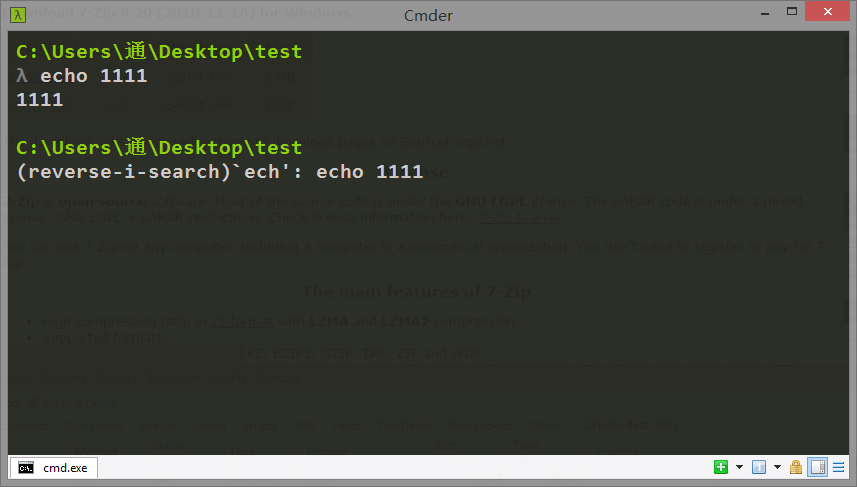

20180703 cmder cwgyin 和 fish
官网：
http://cmder.net/
下载
只有方便的快速切换到当前目录,才能提高生产力.要不然先Win+X调用命令提示符,然后再CD %指定Path%,黄花菜都凉了.
接下来说下如何结合魔方和Cmder,使其快速切换到当前目录. 1.下载Cmder.exe,有迷你版和完全版.完全版有更多的命令,包括git和vim,可以给你贴近原生的*nix感受. 完全版下载地址 （夕下载的是这个） 迷你版下载地址
mini版功能简单，很小巧，只有4M多，主要是cmd和powershell
full版功能强大，包含了git、powershell、bash、chocolatey、Cygwin、SDK等功能

全安装版本介绍
全安装版 cmder 自带的程序
全安装版 cmder 自带了 msysgit, 压缩包 23M, 除了 git 本身这个命令之外, 里面可以使用大量的 linux 命令

比如我最喜欢的 grep, curl(没有 wget), 说实话我并不知道怎么在 windows 下搜索某个目录下的文本, cmder 拯救了我, 像 vim, ssh, ls, bash, perl 更是每个都是痛点需求


左右上下分屏, 多 tab 终端, 都不在话下
linux 下 bash 的快捷键大多都可以使用, 比如 清屏 ctrl + l, ctrl + u, 甚至是历史搜索 ctrl + r 都可以用

不多说了, 还等什么, 赶快使用 cmder 吧!
你可能还需要一些小小的设置来让自己用的更
配置
基本配置
1- 下载完后，解压缩就能用；
2- 添加到环境变量（用户环境变量的path），这样可以不用在 Cmder 目录下运行 Cmder.exe 了。

3- 运行如下命令，可以将Cmder 添加到右键：
添加至右键菜单：进入cmder根目录，以管理员身份运行 cmd
Cmder.exe /REGISTER ALL
4- 打开Cmder 进行配置
加载完后默认的tasks后（点击Add default tasks）
下面这个刚开始好像不管用，后面又管用了。
下载后打开,右下角Show System Menu->setting->Tasks->选中{cmd},做如下修改:
将 cmd /k "%ConEmuDir%\..\init.bat" -new_console:d:%USERPROFILE%
改为 cmd /k "%ConEmuDir%\..\init.bat" -new_console:d:%CD%
如下图所示:

至此设置完毕。 在任何文件夹下右键打开即可自动切换到当前路径下。

背景
当然这个完全是图好看的。 可以选择自己喜欢的图片，暗化之后效果不错，在 Features-Transparency 下也能弄出透明效果

主题
内置了几款不错的主题，总有一款适合你，当然也支持自己设定
快捷键
可以自己设置全局快捷键

设置字体
cmder 默认的 console 字体已经比 windows 自带的好看 n 倍, 但还有一些小小的瑕疵, 比如下图所示, 需要一些小小的设置

输入 win + alt + p 或者 在顶部右击点击 settings, 进入设置页面, 去掉 monospace 选项, 看是不是中文字体正常了? 我自己还会勾选 bold 加粗, 并且把字体改大, 点击 save settings 即可, 如果你发现保存按钮是灰色, 那依然需要进入管理员权限的 cmder 来保存设置
字体大小的设置
- 字体放大缩小： 按住
ctrl+ 鼠标滚轮上下 即可
设置默认打开的终端
- 设置默认使用cmd、PowerShell还是bash：

设置中文编码
设置中文编码：右击cmd窗口，点击setting。在Start-up下的environment中加入: set LANG=zh_CN.UTF8

设置管理员权限和打开新的终端
新开窗口打开管理员权限：新的tab页面使用快捷键： ctrl+t来打开， 然后会弹出如下的配置窗口。还可以设置分屏位置、启动目录以及启动的环境。

防止字体重叠
防止字体重叠（据说..反正我没遇到过）：
基础功能及扩展
- tab分页 可以执行不同的任务，使用快捷键：
ctrl+t来打开 - 在视窗内搜索画面上出现过的关键字
- 新增tab页按钮
- 切换tab页按钮
- 锁定窗口，无法输入新内容
- 切换视窗是否提供卷轴功能，启动时可查询之前显示过的内容。
- 左击可开启系统菜单，右击可直接开启设置 （
Win+Alt+P：开启设置）
设置aliases及分屏打开vscode
用文本编辑器打开安装路径下 -> config -> user-aliases.cmd 添加相应的命令， 使得可以自定义一些短命令来替代某些长命令：
gc = git commit -am $1
sublilme = "E:\Microsoft VS Code\Code.exe" $1 -new_console:s50H
其中$1代表gc命令后面添加的参数， 并且=后的命令可以使用&连接，使得gc可以一次完成多条命令任务。
这样子设置以后，使用gc "first commit"就会替代 git commit -am"first commit"时。
键入命令 sublime 就可直接在窗口右边50%横向打开vscode，若是想纵向打开则更改参数(new_console:s50V)，当中的数字作为百分比。（注意cmder窗口要足够大小才能分栏显示）
ps: 这仅仅是设置了cmd下的aliases， 如果想更改powershell下的，需要打开vendor/profile.ps1
Set-Alias sublime "C:\Program Files\Sublime Text 3\sublime_text.exe"
pss: 如果想打开sublime， 可能配置会麻烦一些， 可以参考该文章： 再见2015 再见cmd
5. 个性化配置
- 分屏设置
打开 setting -> key -> search : split ， 即可调节左右分屏以及上下分屏了

这个很有用，我的设置如下：
F5: 上下分屏
F6: 左右分屏
-
主题设置： setting -> Features -> Colors 选择不同的Schemes 即可， 下面可以设置一些比较细节的颜色显示
-
调节背景透明度： 个人喜好问题。在 setting -> Features -> Transparency 。 第一个进度条的是在活跃（焦点在cmder时）的窗口透明度，第二个则是在非活跃时的窗口透明度。
6. 常用快捷键及设置
对于tab操作与浏览器页的tab操作一致：
| tab操作 | 快捷键 |
|---|---|
| 新建tab | Ctrl + t |
| 关闭tab | Ctrl + w |
| 切换Tab | Ctrl+Tab或Ctrl+1,2... |
| 新建CMD | Shift + Alt + 1 |
| 新建 PowerShell | Shift + Alt + 2 |
| 全屏操作 | Alt + Enter |
cmder 的设置
添加 ll 等命令在cmder->config->aliases，打开aliases。并将:
l=ls --show-control-chars
la=ls -aF --show-control-chars
ll=ls -alF --show-control-chars
ls=ls --show-control-chars -F
添加至文件末尾，用于增强命令并添加颜色区分。
参考文献
1- https://blog.csdn.net/csdn_moming/article/details/50968258
2- http://bg.biedalian.com/2014/09/11/cmder.html
3- https://www.jianshu.com/p/979db1a96f6d (划重点)
4-https://lfire.github.io/2017/03/08/cmder-cygwin-chinese/
5- 附上最后一个更详细的介绍： https://jeffjade.com/2016/01/13/2016-01-13-windows-software-cmder/
这个并未总结进来。